【piko･BHTwitter】LoginError.AttestationDeniedの対処法

2026年2月時点ではこの問題は解決
2026年2月時点では、piko(ReVanced X)およびBHTwitterにおいて通常のログインが可能になっている。 再び同じような状況に直面した際に以下の方法を試してみてほしい。
piko(ReVanced X)やBHTwitterでログインエラーが発生
2025年12月、X(旧Twitter)のModアプリでログインしようとすると "LoginError.AttestationDenied" と表示されてログインができない問題が発生している。 これはログインが正規のアプリ以外から行われた際、パスキーや他のアカウントによるログイン、パスワード認証がすべて弾かれる仕様に変更されたことが原因だと考えられる。 これはアプリのバージョンによる仕様変更ではなくAPI認証の仕様変更のため、アプリをダウングレードするという方法は通用しない。 しかし、ブラウザ認証やGoogleパスワードマネージャーによる認証はアプリの正規非正規に関係ないため、強制的にAPI認証ではなくこれらの認証に切り替えてログインするという対処法がある。 ここではpiko(ReVanced X)などのAndroid版XのModアプリとBHTwitterなどのiOS版XのModアプリのそれぞれでログインする方法を解説する。
目次
piko(ReVanced X)
ここではpiko(ReVanced X)などのAndroid版XのModアプリでログインする方法を解説する。 AndroidではGoogleパスワードマネージャーによるログインができるようにする。
方法
1.XのアカウントにGoogleアカウントを紐つける
Xに登録したメールアドレスと同じGoogleアカウントでログインすると紐付けができる。 紐付けたいGoogleアカウントがXに登録したメールアドレスと異なる場合、Xのメールアドレスを紐付けたいGoogleアカウントに変更する必要がある。
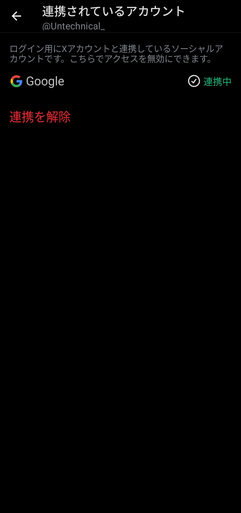
2.Modアプリをアンインストールする
正規のXをインストールするため、一度Modアプリをアンインストールする。
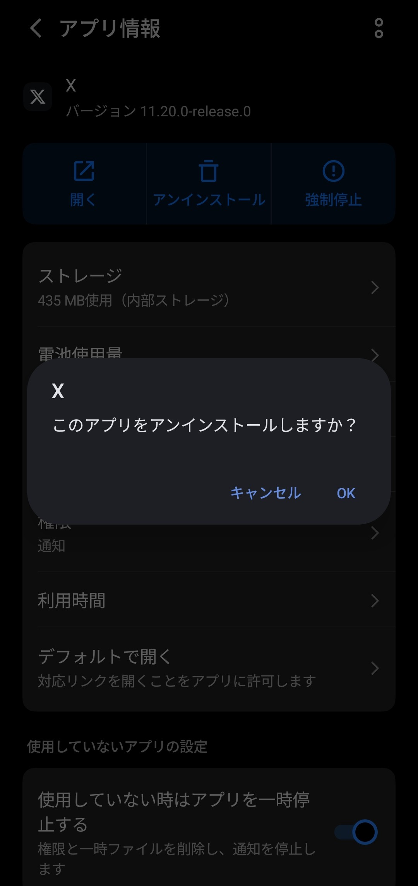
3.Play StoreからXをインストールする
以下のリンクからXをインストールする。
4.Xを開き、 "Googleのアカウントで続ける" をタップする
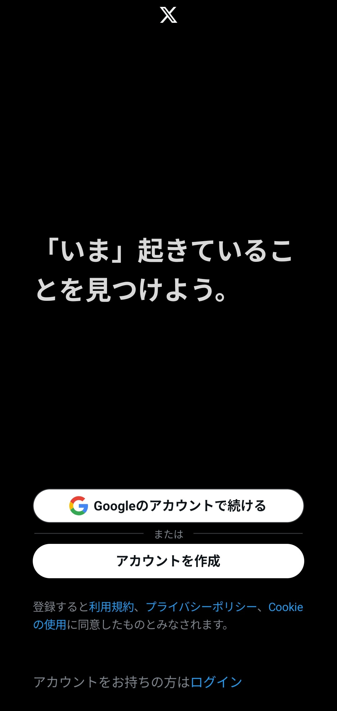
5.Xのアカウントに紐ついたGoogleアカウントでログインする
他の方法でログインすると意味がない。
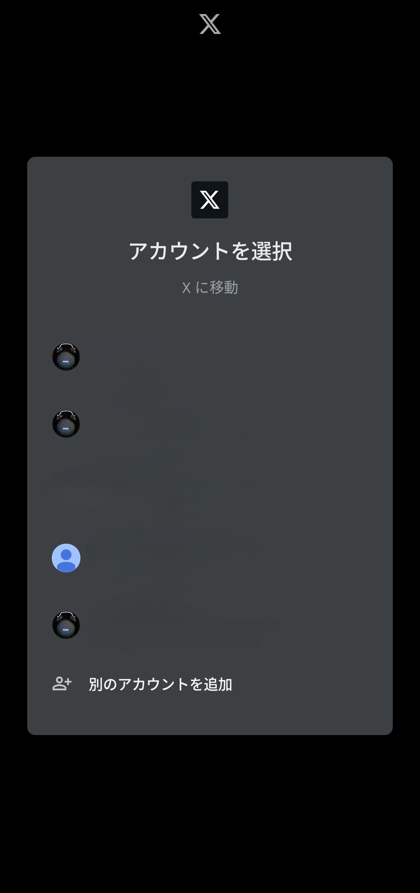
6.Xをアンインストールする
ログインできたらすぐにアンインストールして問題ない。
7.Modアプリをインストールする
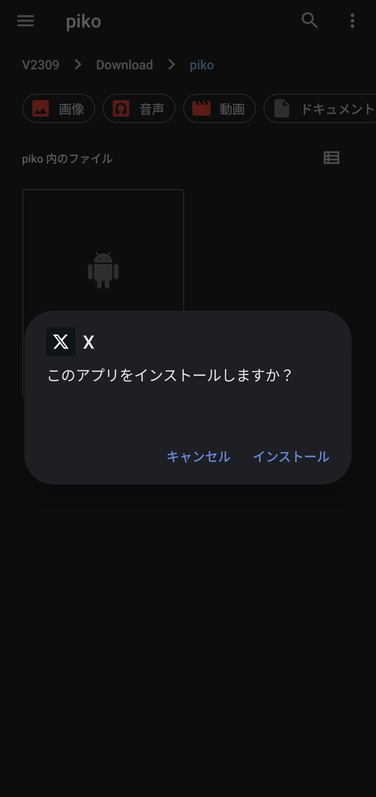
8.Modアプリを開き、 "X用のアカウントを選択する" というポップアップでXのアカウントに紐ついているGoogleアカウントでログインする
正規のXにログインしたときのGoogleアカウントがポップアップに表示される。
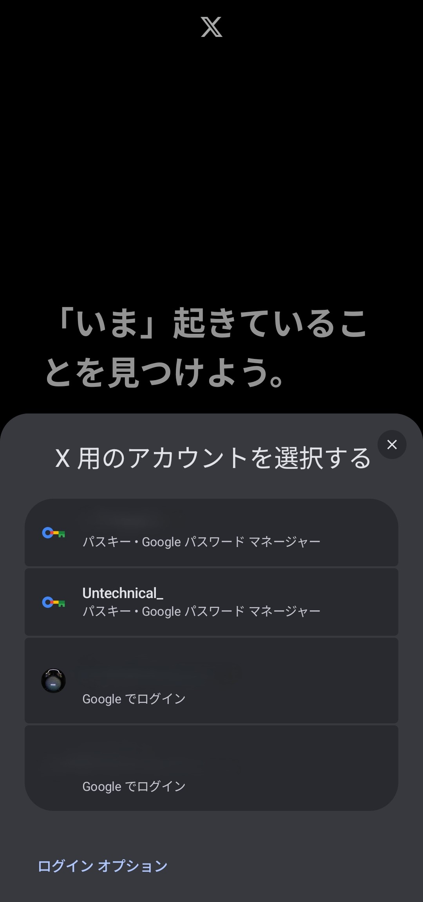
BHTwitter
ここではBHTwitterなどのiOS版XのModアプリでログインする方法を解説する。 iOSではブラウザ認証によるログインができるようにする。
方法
1.Login Fix IPA For Xをダウンロードし、サイドロードする
以下のリンクからLogin Fix IPA For Xをダウンロードし、SideStoreやFeatherなどでサイドロードする。 このアプリはログインをAPI認証からブラウザ認証に強制的に切り替えできるように修正されたBHTwitterである。
以下のリンクはサイドロードの方法である。
2.Login Fix IPA For Xを開き、赤い丸のアイコンをタップする
このアプリでは常にこのアイコンが表示されている。
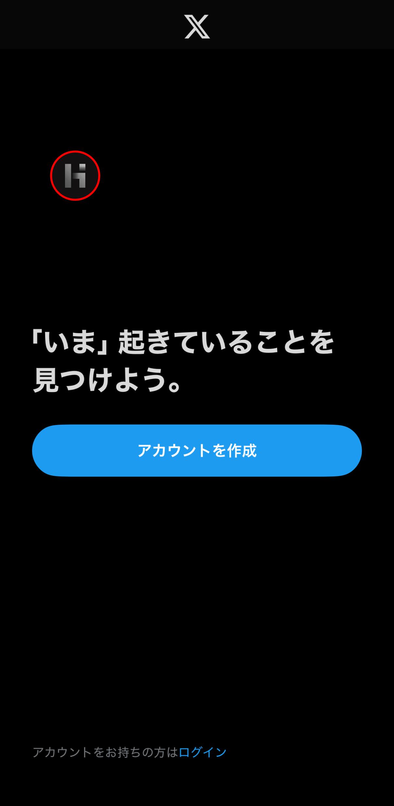
3. "Enable Login" をタップする
"Enable Login" をタップすると、赤い丸のアイコンが緑色になる。
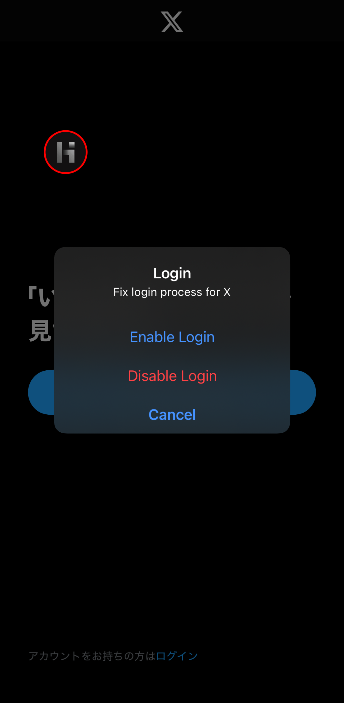
4. "アカウントをお持ちの方はログイン" をタップする
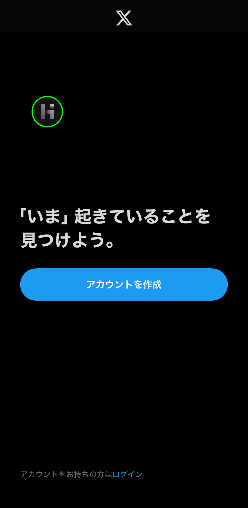
5.Xのアカウントでログインする
緑色の丸のアイコンの場合はログインの方法がAPI認証からブラウザ認証に切り替わり、ログインできる。
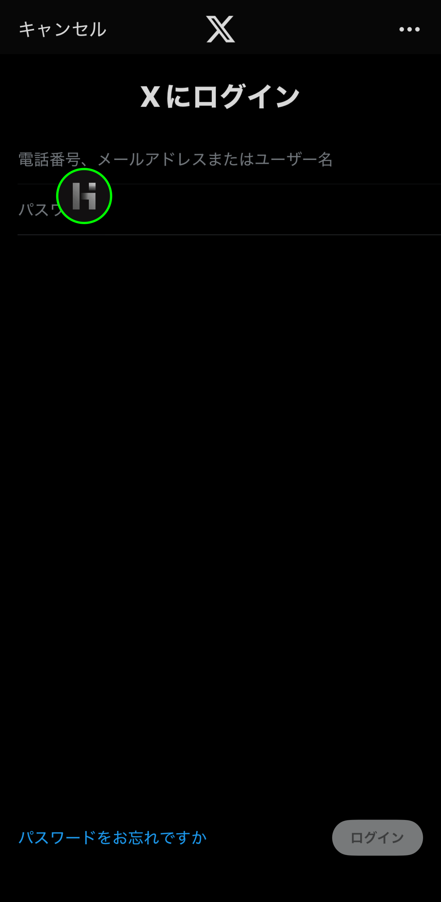
6.Modアプリを上書きでサイドロードする
ログインした状態でModアプリをサイドロードすれば、そのままログイン状態が引き継がれる。
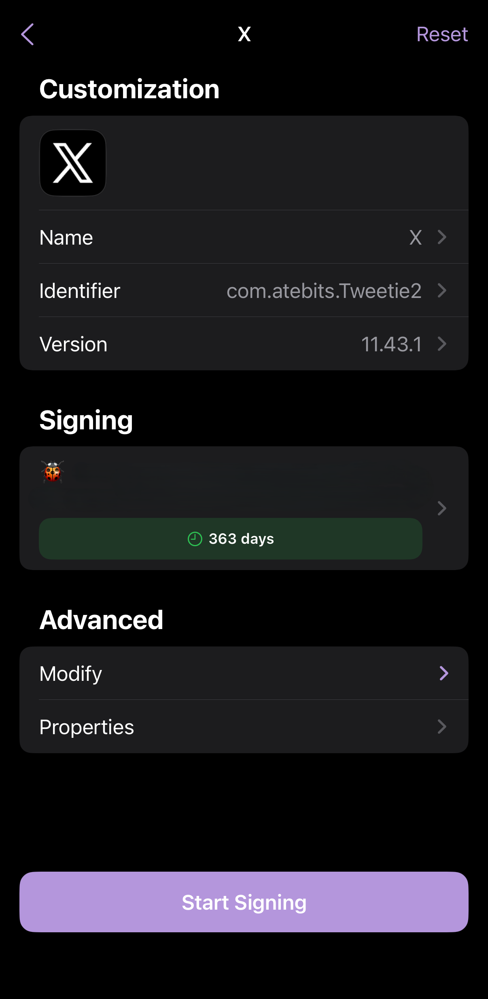
このログイン方法も塞がれる可能性がある
今のところGoogleパスワードマネージャーやWeb認証に強制的に切り替えることでログインできているが、これらの方法も塞がれる可能性は十分にある。 また、この方法だとAndroidでもiOSでも1つのアカウントでしかログインできない。 このようなModアプリの規制は近年広がりつつあり、現にTikTokでもModアプリのログインができないという声がある。 もちろんModアプリは公式が想定していない利用方法なので、規制されるのは仕方がないことである。 Modアプリが完全に使えなくなる日も近いのかもしれない。
関連記事
プロフィール

高度情報社会の最先端を駆け抜ける